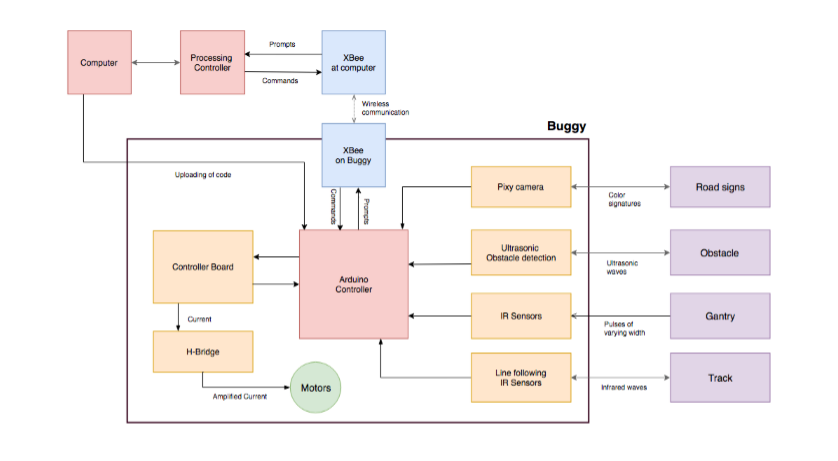
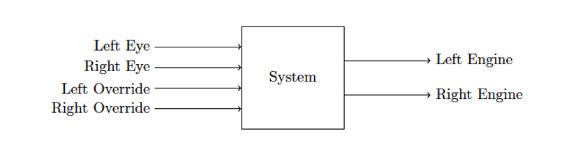
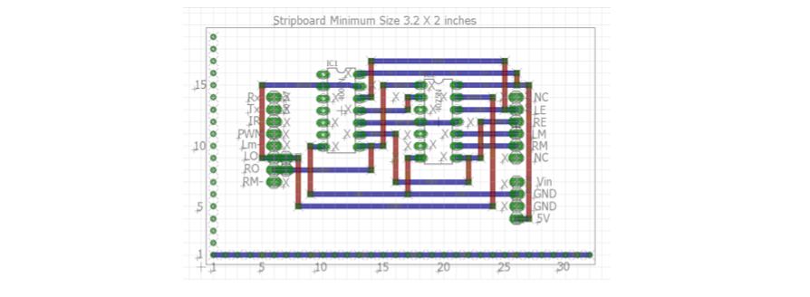
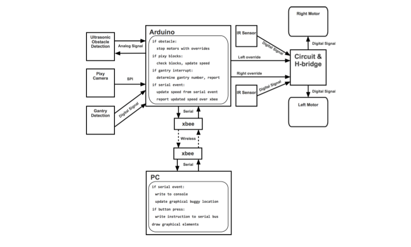

Summary
This project was performed at Trinity College during the spring of 2018 and counted as my BSc thesis at KTH (Engineering Physics). With sensors and control systems to analyse data, this project aimed to construct a self-driven Buggy that can operate in a simplified environment consisting of a white line on a black mat.
The project was divided in two parts that led to the Silver and the Gold challenge. To complete the silver challenge, the buggy needed to be able to drive two laps around a known track and report its progress to the computer telemetry, sense obstacles along the way and stop if an obstacle was detected. It also needed to use a pixy cam for taking shortcuts at forkings of the road, speed up and slow down according to specific color signatures. Lastly it also needed to sense gantries that were placed along the track and sended out pulses of varying width and report back to the telemetry which gantry it passed.
The gold challenge consisted of a previously unknown track that the buggy should perform as quickly as possible. This challenge opened up for a more creative approach to the programming and we could choose what hardware parts we wanted to use and not to use.
Technical Walkthrough
For an overview of the design for this project, we created a block diagram. This shows a description of how our computer’s interface and the buggy operate.
The first thing we had to do was to simplify our system. We used basic control theory to create a simple block diagram where we define our different inputs and outputs. We represent our buggy as a system that has 4 different inputs and 2 outputs. The inputs are the left eye and the right eye that is our line following sensors that can see the line on the floor and the overrides for respective eye. The outputs are the left and the right engine.
We continued on and created a truth table and in the next step, we transferred the values from our truth table into Karnaugh maps. This is a method where we use a two-dimensional grid and the cells in it are ordered in Gray code. Each cell is representing one combination of input and by identifying optimal groups we can use it to simplify our Boolean algebra expressions and from that implement physical logic gates. From the Karnaugh maps we derived the equations for our motors.
We used 4000 series logic to implement or equations in Multisim and used a two input NOR-chip and a three input OR-chip. Then we used Multisim as a way to test our logic equations and then moved on to the software Eagle to design our circuit diagram.
The software design process consisted of making a user interface in Processing and the communication design in Arduino. Our system model looked like following:
All global variables and global constants have variable name with uppercase letters by convention. These are all declared at the top of the processing file before the declaration of functions. Included in the global variables are various list-based data structures used to group relevant information. These include integers that define the positions of buttons and floats that define graphical positions that the position-reporting buggy can take on the screen.